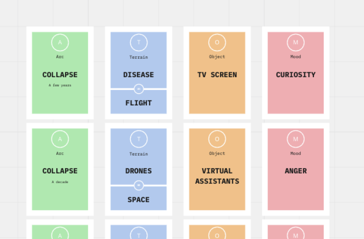
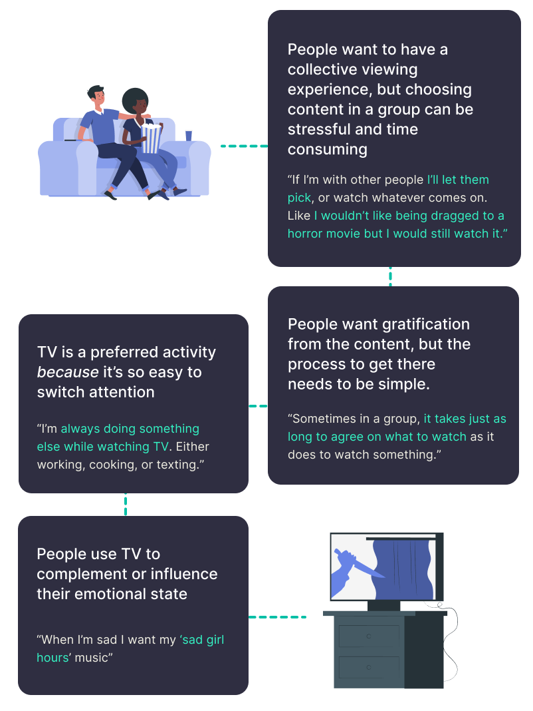

- Bodystorming
- Affinity Diagramming
- Think Aloud Protocol
- Directed Storytelling
- Contextual Inquiry
- Diary Study
- Experience Mapping
- Conceptual Prototyping
- The Thing from the Future
- Wizard of Oz Techniques
CURRENT STATE

We began with a larger scale investigation to feel out the sheer scope of a project this size. A quickly constructed “pretotype” involving a TV that would follow a user’s eyeline as they completed tasks or shifted in their bed or couch and a 3D video accompanied by faking surround sound gave us our base impressions on how people instinctively interacted with novel technologies in television when not given discrete controls.

A member of our team wandered into the participants view wearing a square of post-its. When our participants didn’t notice the attention check, we could confirm satisfactory levels of immersion.
This supplemented with participant reports on viewing habits and preferences in a focused 60 minute contextual inquiry, and reported over a 7 day diary study period provided the foundation of our first affinity diagram,. Here, we collected notes and found patterns, overlapping feelings, frustrations, and surfacing wants and needs based on the current state of television.

FUTURE STATE
To supplement the research we had done on the current state of TV, we began looking towards forward with the future-thinking game The Thing From the Future, adapted for our purpose with cards dedicated to TV, digital media, and emerging technologies.

User-generated solutions to the prompts gave us insight into what people envisioned for themselves in the future and unearthed wants and needs in a tech-driven future. Broadly a couple of these were:

Escapism
Looking at how tech that mimics high fidelity can provide cheap and instantaneous experiences

Nostalgia
Using future facing technology to relive cherished memories from the past as if they were happening in the present

Collective Experiences
The core of most surfaced needs - being able to share an experience and discuss it afterwards
01
People want to have collective experiences when watching with other people
02
People choose to watch TV because they can easily switch their attention to and from other tasks
03
People want gratification from the TV content and not the process of obtaining it
04
People want to use content to indulge in their emotions
How might we adapt digital content to meet people’s social, emotional, and personal context?
